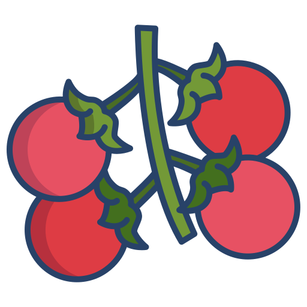

방울토마토
 생산된 방울 토마토
생산된 방울 토마토
특징
- 맛이 달고 진함
- 크기가 작고 귀여워서 아이들도 좋아함
- 건강한 성분이 많이 함유됨
- 다양한 요리나 음료에 사용됨
방울 토마토 요리법 보기
효능
- 항산화 작용으로 노화를 방지한다.
- 칼륨 함량이 높아서 혈압 조절에 좋다.
- 비타민 C 함량이 높아서 면역력 향상에 좋다.
- 채내 독소 제거와 간 기능 개선에도 효과가 있다.
주문하기
방울 토마토는 3kg에 2만원입니다. 주문하시려면 아래링크를 클릭해 주세요
상품정보
| 상품번호 |
12345 |
| 상품상태 |
신선 |
| 원산지 |
한국 |
| 품종 |
방울 토마토 |
| 수확시기 |
하절기 |
